形式语言与自动机期末复习总结
本文为本人考前复习自动机的时候简单总结的一些知识点和题型的做法的人话版本，对于概念、专有名词的说明可能不够准确，只适用于考前突击能做出题就行的情况，若时间充裕请认真理解课本以及ppt对相关概念、定理和算法的描述与证明。一些内容可能存在问题，水平有限敬请谅解。
第一章 绪论
笛卡尔积：
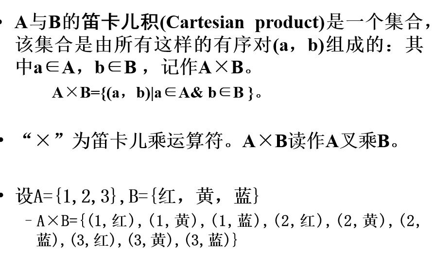
两个集合叉乘相当于将两个集合元素全排列
例题：
1 | 集合A={1,2,3}，集合B={a,b,c}, 计算笛卡尔积AXB |
幂集：
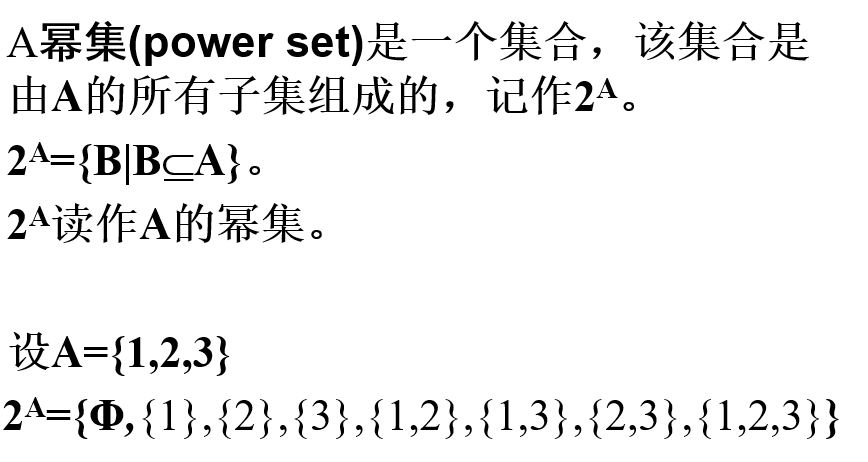
例题：
1 | 集合A={a,b,c},计算A的幂集2A |
闭包(closure)
设P是关于关系的性质的集合，关系R的P闭包(closure)是包含R并且具有P中所有性质的最小关系。
正闭包(positive closure)
(1)R是R+的子集。
(2)如果(a，b)，(b，c)∈R+ 则(a，c)∈R+。
(3)除(1)、(2)外，R+不再含有其他任何元素。克林闭包R*
正闭包+0次幂
字母表
字母表是一个**非空有穷**集合，字母表中的元素称为该字母表的一个字母(letter)。又叫做符号(symbol)、或者字符(character)。
字符具有整体性（不可分性）和可辨认性（可区分性）
例题：
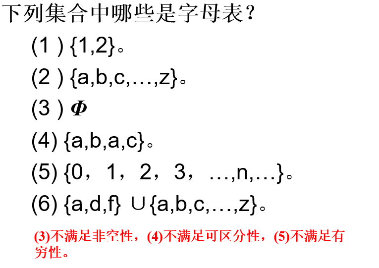
递归证明
- 递归定义：
又称为归纳定义(inductive definition)，它来定义一个集合。
集合的递归定义由三部分组成：
基础(basis)：用来定义该集合的最基本的元素。
归纳(induction)：指出用集合中的元素来构造集合的新元素的规则。
极小性限定：指出一个对象是所定义集合中的元素的充要条件是它可以通过有限次的使用基础和归纳条款中所给的规定构造出来。 - 归纳证明 ：
与递归定义相对应。
归纳证明方法包括三大步：
基础(basis)：证明最基本元素具有相应性质。
归纳(induction)：证明如果某些元素具有相应性质，则根据这些元素用所规定的方法得到的新元素也具有相应的性质。
根据归纳法原理，所有的元素具有相应的性质。
归纳证明流程：
①基础：在n=0的时候，满足条件
②归纳：假设n的时候成立，试证n+1的时候同样成立
③由归纳法原理，结论对任意有穷集合成立
归纳证明例题：
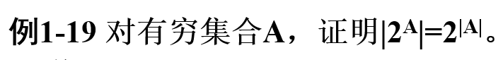
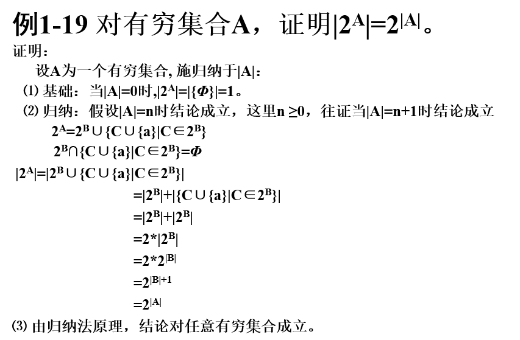
语言例题：
设∑={0，1} ，请给出上∑的下列语言的形式表示：
(1) 所有以0开头的串。 {0}{0,1}*
(2) 所有以11开头，以11结尾的串 {11}{0,1}*{11}
(3) 所有包含子串001的串 {0,1}{001}{0,1}
(4) 所有正数第10个字符是0的串 {0,1}^9{0}{0,1}*
(5) 所有不包含3个连续0的串 {001, 01, 1}*
几个重要的基本概念：
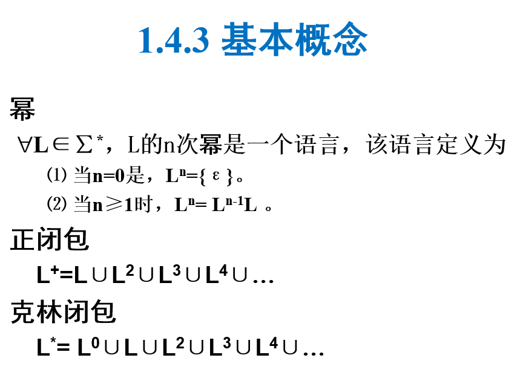
第二章 文法
文法定义：
G=(V, T, P, S)
V—变量
T—终结符
P—产生式
S—起始符号
例如：({A}，{0，1}，{A→01，A→0A1，A→1A0}，A)
候选式：产生式 A→a|b|c 中，a，b，c分别为候选式
文法推导
给出文法和句子，根据文法推导句子的产生过程
例2-4： 设G=({A}，{a}，{A→a|aA}，A)，句子aaaaa的推导过程？
1 | A→aA→aaA→aaaA→aaaaA→aaaaa |
文法的乔姆斯基体系
0型文法（PSG）：短语结构文法
1型文法（CSG）：对于任意产生式，都有右边数量大于等于左边，则为1型文法，也称之为上下文有关文法
2型文法（CFG）：在1型文法的基础上，若满足产生式左边的都为非终结符，则为2型文法，也称之为上下文无关文法
3型文法（RG）：正则文法，产生式左边为单一终结符，右边为一串终结符和一个非终结符的组合（左线性或右线性）
左线性文法：基本形式为A→Aa
右线性文法：基本形式为A→aA
文法设计：
第三章 DFA NFA
即时描述迁移：
例子：对于如下DFA，写出其即时描述迁移：
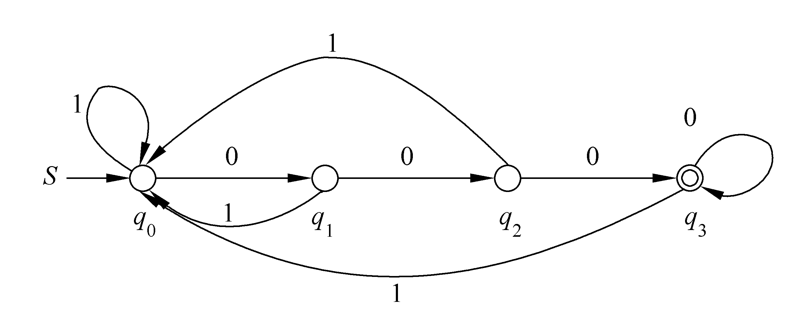
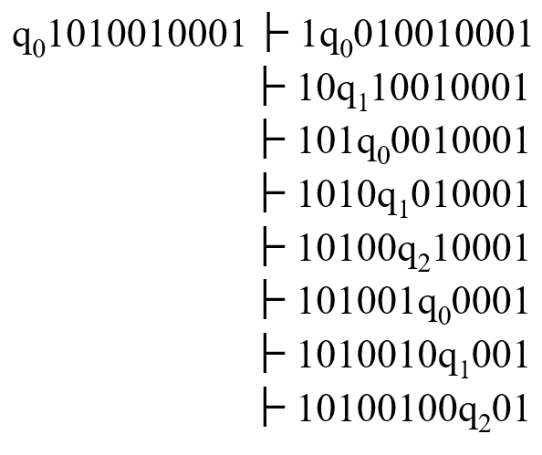
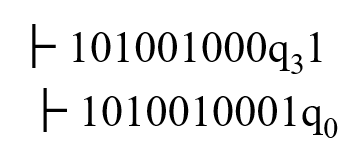
根据接受的输入变化状态
ε-NFA FA
线性文法DFA构造：
右线性文法DFA构造：
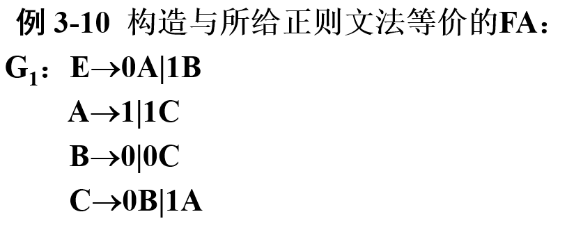
使用产生式对应的方式，构造路径
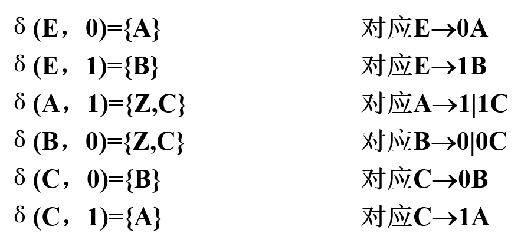
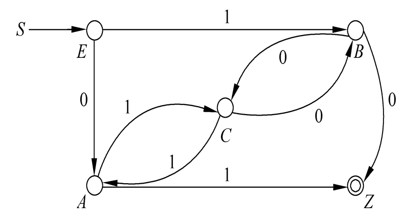
左线性文法DFA构造：
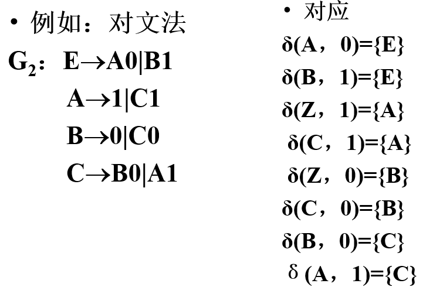
同样使用产生式对应的方式，构造路径
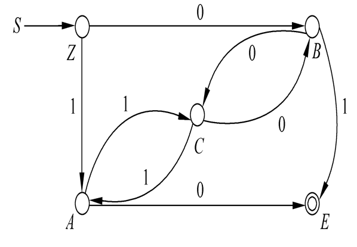
终结符用 Z 表示
右线性文法DFA转换为等价左线性文法：
将DFA的所有箭头反过来，S输入改到Z处，将E作为终结状态，即改为左线性文法对应的DFA。
对于每个状态，产生式为来源状态后跟读入数据。例如：A→C1|1
ε-NFA转DFA
两步：
①ε-NFA转NFA： 根据ε-NFA状态转移表画出NFA的状态转移表
②NFA转DFA： 根据NFA状态转移表，先将初始状态放入，查看到达的状态集合，并将新出现的集合放入列表，类似下表的形式。最后，将包含原NFA终止态的节点设置为终止节点，然后画出对应的DFA即可（可以对新的节点重命名）
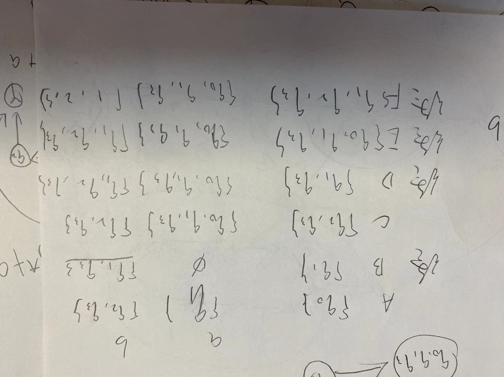
第四章 RE
RE到FA的等价变换：归纳构造法
对于一个正则表达式，不同的单元可以变换为如下形式的FA部分，其中形如（0+1）类型则表示为分支
(下图箭头上没内容的都为ε)
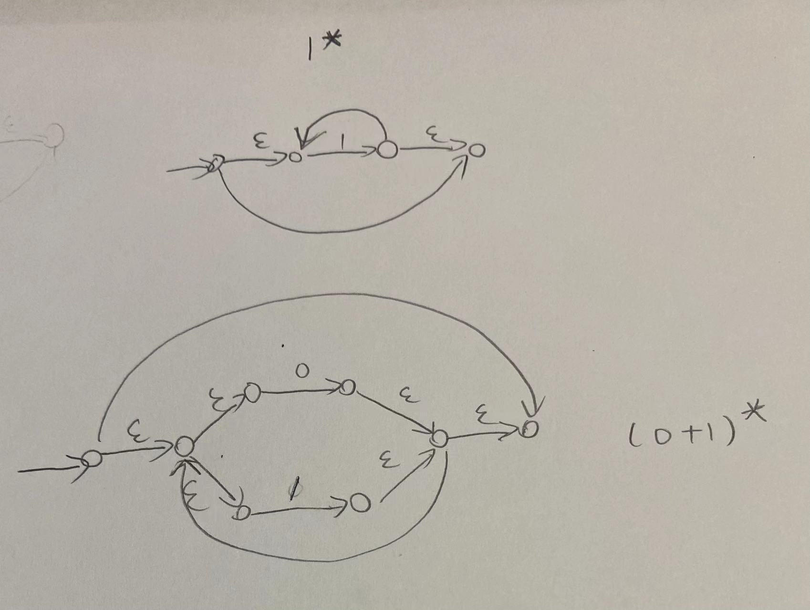
例子：
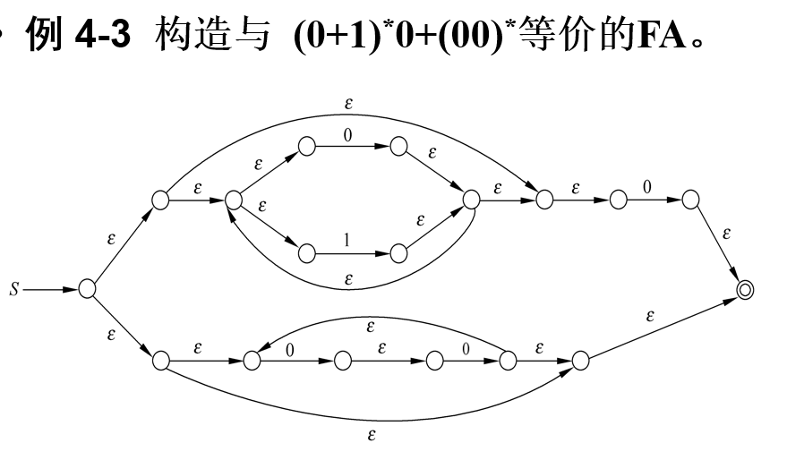
DFA转正则表达式
初始化：设定一个x状态，空转移指向起始状态，设定一个Y状态，将所有终结状态空转移指向Y、
按指定顺序依次去掉所有状态，直到最后只剩下X指向Y的路径，则此时的表达式为DFA的等价正则表达式
第五章 正则语言的封闭性
定理：RL在交运算下封闭
使用场景：要求构造同时满足多个条件的DFA时，可以通过分别构造满足对应条件的DFA，然后通过交运算合成最终的DFA
例子：
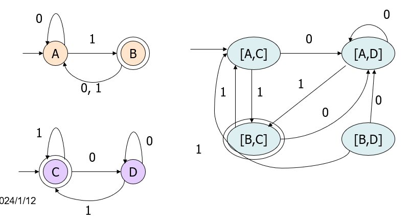
左边两个DFA在经过交运算后形成右边的DFA
DFA极小化
对于一个DFA，可以使用画表法进行极小化：
这里采用的是下三角画表
以下图为例：
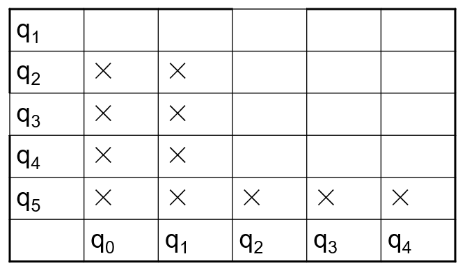
假设DFA有n个状态，行为0-n-1，列为1-n
目标：找出可区分状态并在标上标上x
初始化：首先，最先能找到的可区分的状态为非终止状态和终止状态，如下图q0是非终结状态，q2为终结状态，则q0与q2是可区分的，因此在表上对应q0-q2处应打x
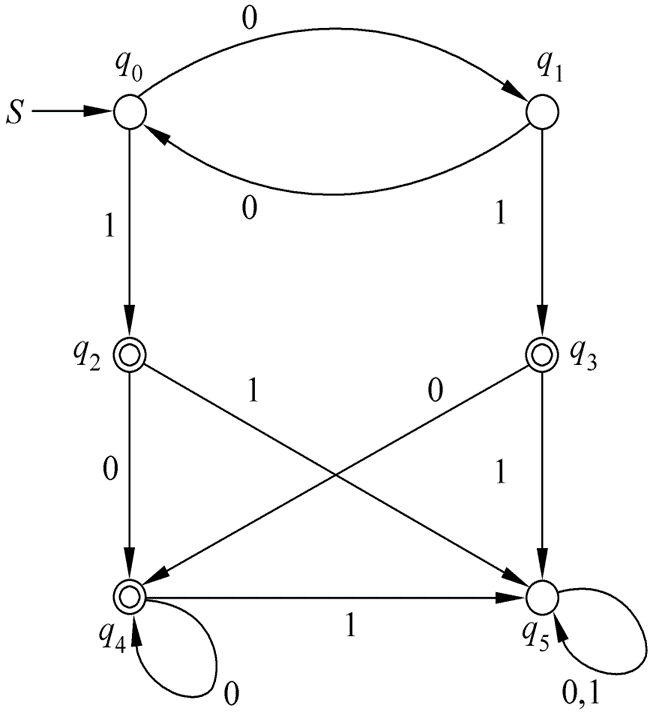
下一步：不断循环下面的过程：找到两个未标记的状态p，q，若存在一个输入a，使得{δ(p,a)，δ(q,a)}是已经被标记的，即p和q经过a输入跳转到的状态是否是可区分的，如果是可区分的，则为{p,q}加上标记，在表上p-q处打x。对于状态p和q，只有遍历所有的输入之后到达的状态都是不可区分的，p和q才是不可区分的。
遍历所有对之后，在表中下三角部分观察是否存在未标记，即不可区分的状态，若有，则极小化后的DFA中这些状态要合并为一个状态。
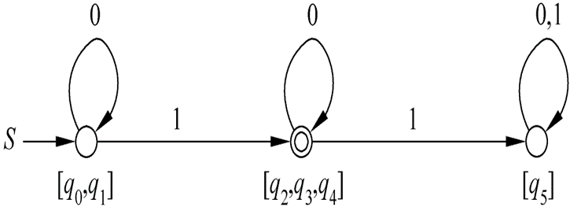
正则语言的性质
- 判定性质：泵引理及其应用
- 封闭性质：并、乘积、闭包、补、交的封闭性
判定性质：
成员判定：判定某一字符串是否在一个正则语言L中
空否判定：判定正则语言L是否为空
步骤：假定语言描述为DFA：
1、构建状态转移图；
2、计算从开始状态q0出发，所有可达到状态的集合；
3、若任何接受状态是可到达的，则该语言非空，否则该语言为空。无穷判定：判定正则语言L是否为无穷
步骤：给定L对应的DFA：
- 若该DFA有n个状态, L包含长度大于等于n的字符串，则该语言无穷。
- 否则，该语言L一定是有穷的。
无穷判定的证明：如果一个DFA有n个状态，并接受长度大于等于n的字符串w，那么在w的路径上，一定包含一个状态出现了至少两次。
原因：长度大于等于n的字符串w的路径上经过的状态数量至少为n+1
泵引理
用于证明一个语言L不是RL
直接上题，抄板子基本就能做题
z=uvw
假设v=0^k^ ，由于|uv|≤N，则设w=0^j^， u=0^N-k-j^，这里的N为一个常量
然后求uv^i^w的值，计算指数，检验结果是否和原来的是等价的
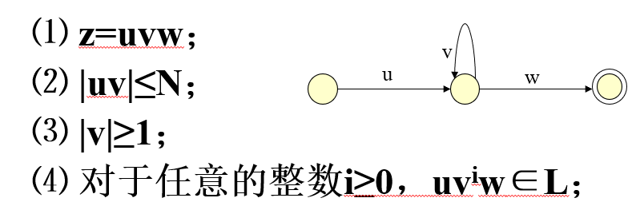
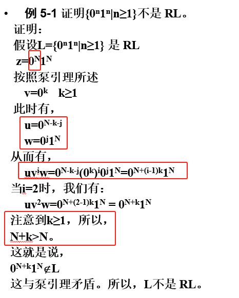
使用泵引理证明一个语言不是RL的目标：证明最后推出的正则表达式中，不符合一开始给出的语言的格式。例如形如0^N^1^N^，则最后证明出N+k>N
形如0^N^，N为素数，则是证明最后的计算结果不是素数，不满足原始的条件
等价性判断
给定一个RL语言L与M，判断L是否等于M
从L跟M的DFA出发，构建一个乘积DFA
构造了然后呢？
第六章 上下文无关语言
消除无用符号：
1、去不可派生：
①初始化OLDV={∅}，根据产生式找到存在能够推出终结符的产生式的非终结符，将其加入NEWV中
②将上一步得到的NEWV作为新的OLDV，首先新的NEWV中包含OLDV的所有元素，然后查找所有能够推导出OLDV中非终结符的非终结符（父亲），将它们加入新的NEWV中
③重复②，直到OLDV=NEWV，终止
④终止后，删去原文法中在NEWV中不存在的符号（非终结符）
2、去不可达：
①初始化OLDV={∅}，OLDT={∅}，其中OLDV保存非终结符，OLDT保存终结符，然后从S开始，先将S加入NEWV，然后看S的产生式，将其能够到达的非终结符加入NEWV中，NEWT同理
②查找OLDV对应的所有产生式，将可达的非终结符加入NEWV，终结符加入NEWT
③重复②，直到OLDV=NEWV, OLDT=NEWT，终止
④新的文法中只保留在NEWV和NEWT的元素的产生式
例子：
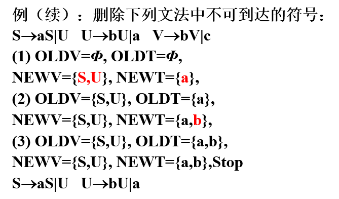
去ε产生式：
①初始化OLDU={∅}，NEWU中加入能够推导出空串的非终结符
②OLDU为上一步的NEWU，NEWU先包含OLDU的所有元素，然后查找其他产生式，如果存在有非终结符能够推导出的整体为空（所有部分都位于OLDU中），则将其加入NEWU中
③重复②，直到NEWU=OLDU，终止
④对于NEWU中存在的非终结符，将其空产生式去掉，然后增加在其他情况中，该终结符为空的情况；对于推导出这些非终结符中的非终结符，将原来可能为空的非终结符替换为前面更新的所有产生式。特别地，如果推导出S→ε，则这一条是无法消除的。
例子：
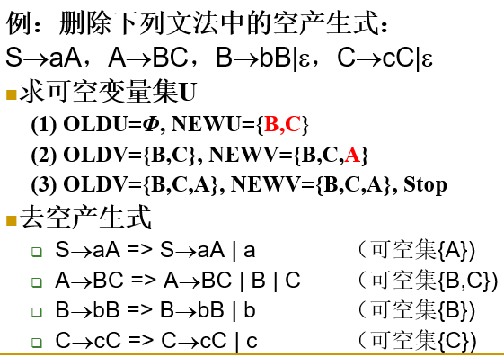
一些定义
文法定义：G=(V，T，P，S) ，V：变量， T：终结符， P：产生式， S：开始符号
DFA元组定义：M=(Q，∑，δ，q0，F)，Q：状态集合， ∑：字母表， δ：状态转移函数， q0：起始状态， F：终止状态
文法定义中的成分容易与DFA定义成分混淆
左线性文法与有限自动机等价
Moore机和Mealy机等价
不是正则语言的经典例子：{a^n^b^n^|n≥0}
对于两个正则表达式r和s，以下几个等式是正确的：r+s=s+r, r^^r=rr^^，以下等式是错误的：rs=sr
任意派生树的最左推导是唯一的
设计一个无穷语言最少需要2个产生式
对于任意非空集合Σ，ε∉Σ
2NFA 允许双向移动，因此 2NFA 的描述能力比 NFA 强。×
有穷语言都是正则语言 ×
一个问题，如果不存在一个 FA 接受它的语言，则称此问题是不可判定的。 ×
空串是任意串的真前缀和真后缀。 × 空串不能是自己的真前缀
ε-NFA 允许空迁移和非空迁移，而 NFA 只允许非空迁移，因此 ε-NFA 比 NFA 强。×
对于上面，ε-NFA，NFA，DFA是等价，可以相互转换，因此这几个都是一样强
本文链接： https://t3uk1.github.io/2024/01/12/形式语言与自动机期末复习总结/
版权声明： 除特殊说明外，本作品采用 CC BY-NC-SA 4.0 协议进行许可。转载请注明出处！